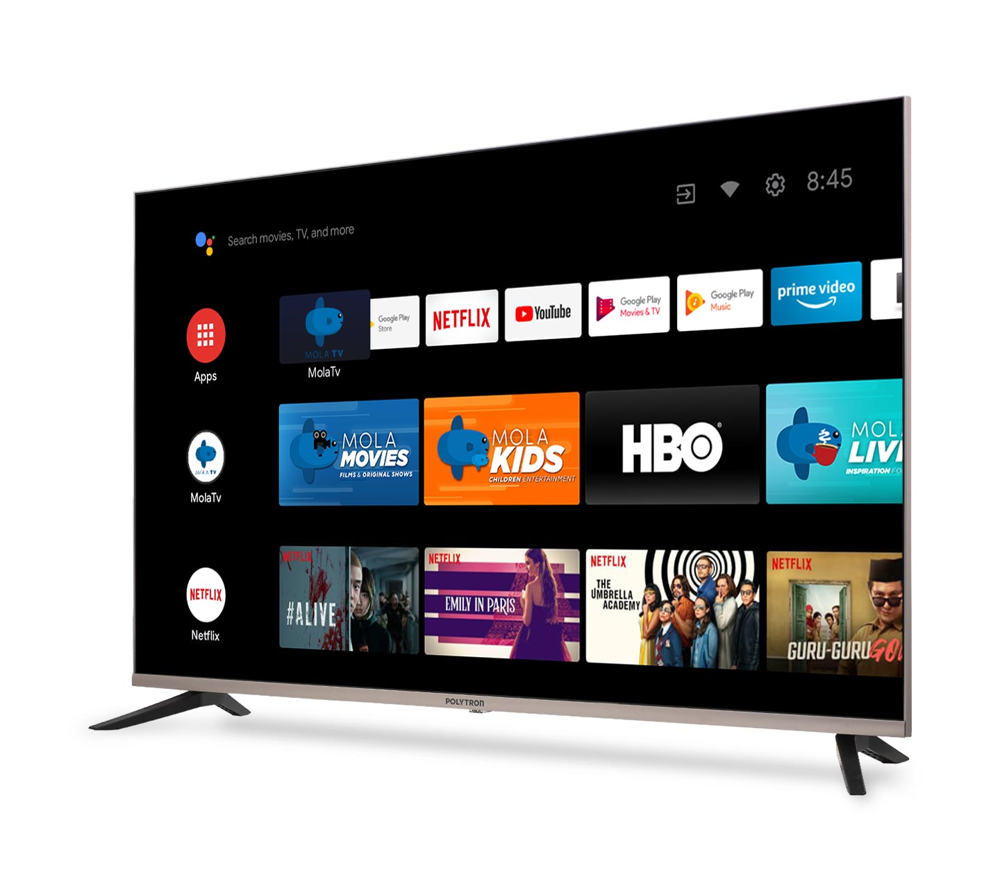

Biodata Diri

Nama: Maulana Zakaria
NIM: 607012400097
Kelas: D3SI 48-03
Nama Mata Kuliah
Jaringan Komputer
Pembahasan Perangkat Jaringan Komputer
Perangkat Akhir
Nama Perangkat: Smart Tv
Gambar
Fungsi: Kelebihan Smart TV yang bisa anda dapatkan adalah kemampuan untuk menikmati konten di luar saluran TV umumnya. Smart TV menyediakan layanan VOD favorit Anda seperti Netflix, Amazon.
Jenis atau macam-macam Smart TV:
WebOS adalah sistem operasi berbasis Linux yang digunakan pada smart TV LG. Sistem operasi ini dikenal dengan antarmukanya yang intuitif dan user-friendly, serta kemudahan navigasi dan penemuan konten. Pengguna juga memiliki akses ke berbagai aplikasi, game, dan konten lainnya melalui LG Content Store.
Roku OS adalah Sistem operasi ini dikenal dengan antarmukanya yang simpel dan mudah digunakan, sehingga cocok untuk orang tua yang tidak ingin repot. Namun, Roku TV tidak memiliki akses ke Google Play Store, sehingga pengguna tidak dapat menambahkan aplikasi Android
Google TV adalah sistem operasi berbasis Android yang dikembangkan oleh Google untuk smart TV dan perangkat media streaming. Google TV pertama kali diperkenalkan pada tahun 2020 sebagai penerus dari Android TV. Pada halaman utamanya, Google TV menampilkan berbagai rekomendasi konten dari berbagai platform streaming yang sering digunakan
Tizen OS adalah sistem operasi smart TV yang banyak digunakan di produk Samsung. Sistem operasi ini dikenal dengan performanya yang cepat dan mulus, serta antarmukanya yang mudah digunakan. Tizen OS juga menawarkan berbagai fitur menarik, seperti integrated content discovery, voice interaction, dan cross-device compatibility.
VIDAA adalah sistem operasi smart TV yang dikembangkan oleh Hisense dan digunakan pada smart TV Hisense dan Toshiba. Sistem operasi ini dikenal dengan navigasi dan antarmukanya yang sederhana dan mudah digunakan.
Fire TV adalah sistem operasi smart TV yang didasarkan pada Android Open Source Project (AOSP). Salah satu keunggulan utama Fire TV adalah integrasinya yang erat dengan ekosistem Amazon. Pengguna dapat dengan mudah mengakses konten dan layanan digital Amazon, seperti Amazon Prime Video, Amazon Music, dan Amazon Photos.
Lampiran File Tutorial
File Tutorial membuat hosting dapat Dilihat melalui tautan
ini:
Klik di sini
File Tutorial membuat web dapat Dilihat melalui tautan
ini:
Klik di sini